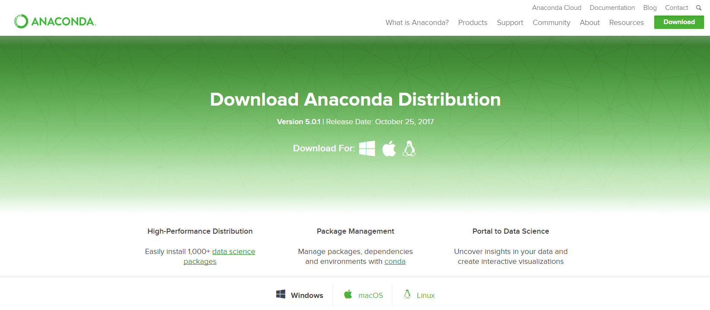
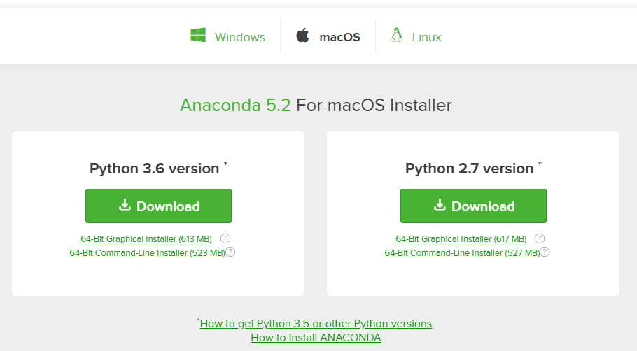
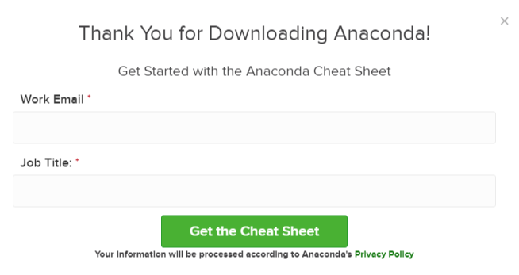

Installing Anaconda on MacOS¶
In this section, we will run through installing the Anaconda distribution of Python on MacOS. Most versions of MacOS come pre-installed with legacy Python (Version 2.7). You can confirm this legacy version of Python is installed by opening the MacOS terminal. To open the MacOS terminal use [command]+[Space Bar] and type terminal in the Spotlight Search bar.
In the MacOS Terminal type (note: the dollar sign $ is used to indicate the terminal prompt. The dollar sign $ does not need to be typed):
$ python
You will most likely see version 2.7 is installed. An issue for MacOS users is that the installed system version of Python has a set of permissions that will not always allow Python to run and may not allow Python to install external packages. Therefore, I recommend the Anaconda distribution of Python is installed in addition to the system version of Python on MacOS. You will be able to run Python code using the Anaconda distribution of Python, and you will be able to install external packages on theAnaconda distribution of Python.
To install the Anaconda distribution of Python follow the steps below:
Steps:¶
Visit Anaconda.com/downloads
Select MacOS and Download the .pkg installer
Open the .pkg installer
Follow the installation instructions
Source your .bash-rc file
Open a terminal and type
pythonand run some code.
1. Visit the Anaconda downloads page¶
Go to the following link: Anaconda.com/downloads
The Anaconda Downloads Page will look something like this:

2. Select MacOS and download the .pkg installer¶
In the opperating systems box, select [MacOS]. Then download the most recent Python 3 distribution (at the time of this writing the most recent version is Python 3.6) graphical installer by clicking the Download link. Python 2.7 is legacy Python. For undergraduate engineers, select the most recent Python 3 version.

You may be prompted to enter your email. You can still download Anaconda if you click No Thanks or [x] and don’t enter your Work Email address.

3. Open the .pkg installer¶
Using the MacOS finder, navigate to the downloads folder and double click the .pkg installer file you just downloaded. It may be helpful to order your downloads by date to find the .pkg file.
4. Follow the installation instructions¶
Follow the installation instructions. It is advised that you install Anaconda for the current user and that Anaconda is added to your PATH.
5. Source your .bash-rc file¶
Once Anaconda is installed, you need to load the changes to your PATH environment variable in the current terminal session.
Open the MacOS Terminal and type:
$ cd ~
$ source .bashrc
6. Open a terminal and type python and run some code.¶
Open the MacOS Terminal and type:
$ python
You should see something like
Python 3.6.3 | Anaconda Inc. |
At the Python REPL (the Python >>> prompt) try:
>>> import this
If you see the Zen of Python, the installation was successful. Exit out of the Python REPL using >>> exit(). Make sure to include the double parenthesis () after the exit command.